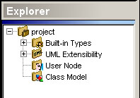

Building a class model
You can create Java application components by reusing existing ones or by adding
new ones in a class model. In the latter case, the model can be created in two
different ways: (1) in the explorer window or (2) in the diagram window.
First, you must right-click project and in the pop-up menu choose Add > Add class
model.

You can accept the default model name, Class model, or you can immediately assign
a more meaningful name to the model.
You can also create Java application components by reusing existing ones. For example
the Copy/Paste function can be used on compatible objects within or outside
the project. On the other hand, the Move function is applied on compatible objects
which are in the same project (on the object pop-up menu, choose Move).